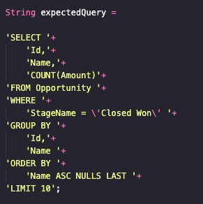
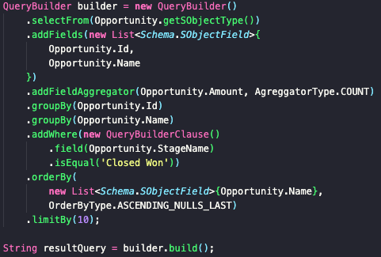

This is a collection of helper classes that allows developers to create dynamic SOQL queries.
The Querybuilder API makes an Apex dynamic SOQL that looks like this:
Into somthing like this:
Ensures field and object accessibility when creating the string output
Translates the math symbols and logical operators into methods
Fully chainable operations that mounts the query piece by piece
Customizable WHERE operation that works like custom formulas in SF
This first version of QueryBuilder API comes with experimental features and some unstable behaviors, but fixes and more features are coming in the near future.
First release